01
AI構築サポート
起業家・経営者の方へ
あなたの業務に合わせて、AIが毎日働く環境を作ります。予約の確認、ブログ更新、経理書類の送付、SNS投稿。止まっていないかの見張りと、遠隔からの復旧手段まで。
導入例を見るAI NATIVE DEVELOPMENT COMPANY / AKITA
相談の要件化から、コード生成、点検、公開、検収まで。if塾株式会社は、開発の全工程をAIと自社基盤で一本化した秋田発のAIネイティブ開発会社です。「AIが作ったものは使えない」で終わらせない、出口の品質で選ばれています。
HOW WE BUILD
私たちは「AIを使って開発する会社」ではなく、「AIで開発するための仕組みそのもの」を持っている会社です。相談から公開、検収、報酬の分配まで、すべてが一本の基盤でつながっています。
「何を頼めばいいか」が決まっていなくて大丈夫。AIが相談内容を、設計・実装・確認・納品の工程に分解します。
受注の多い仕事ごとに、AIへの指示・設計・テスト・公開までを一式にした「型」を48種類。誰が作っても同じ水準に。
セキュリティ、決済、法務、表示崩れなど7分野。実際の公開後事故から逆算した点検を全案件で通します。
GitHubへのpushで自動デプロイ。進捗はお客様専用の画面で常時共有し、任せる不安を見える化で消します。
お客様の検収を通って初めて納品。担当者の実績は改ざんできない形で記録され、次の案件の信用になります。
要件整理、コード生成、テスト、ドキュメント、画像・動画・音楽素材まで。Claude、Codex、Geminiなどの最新モデルを工程ごとに使い分け、人はお客様との対話と判断に集中します。
案件管理、進捗公開、検収、分配、請求、AI秘書による朝の業務報告まで。すべて自分たちのAI開発で作り、毎日使い込んでいます。提案する前に、まず自分たちが使っています。
設計と受け入れ確認は代表と現場責任者が担当します。教育7年・心理職7年の知見で、人とAIの役割分担を設計し、品質のばらつきを吸収します。
SERVICES
「つくる」「使えるようにする」「育てる」。すべての事業の下に、DAO型の人材育成システムがあります。育った人材が、県内外の企業にITを提供し続けます。
起業家・経営者の方へ
あなたの業務に合わせて、AIが毎日働く環境を作ります。予約の確認、ブログ更新、経理書類の送付、SNS投稿。止まっていないかの見張りと、遠隔からの復旧手段まで。
導入例を見る作ってほしいものがある方へ
LINE公式・ミニアプリ、予約・業務アプリ、LP・EC・Webサイト。月数万円の小さな仕事から業務システムまで、要件整理から運用保守まで一本で引き受けます。
実績を見る会社・団体・学校の方へ
社員のAIリテラシー研修から、実務に合わせたハンズオン、講演まで。受講後も迷わないよう、現場の業務を題材にしたワークで「明日から使える」に落とし込みます。
料金を見る自分の手でAIを使いこなしたい方へ
私たちが案件で使っている開発キット（奥義）を、ご自身のPCで使い放題。会員コミュニティと公式LINEで、困ったらすぐ聞けます。
月額16,500円（税込）
30日無料で始めるPR・教育・研修にゲームを使いたい方へ
自社IP「Kitazuna 未来杉の守護者」を企画から公開まで内製。キャラクター、BGM、マップまでAIを活用し、少人数で作り切ります。企業PRや研修用ゲームもお受けします。
Kitazunaを見るAIを任せられる人がほしい方へ
若手を「AI課題解決人材」に育て、企業ごとに合わせ込む毎月の運用とセキュリティまで担うAI担当として派遣します。社内のDX人材育成のご相談も。
育成の仕組みを見るすべての事業の土台
仕事の割り振り、進捗、検収、報酬、実績の記録が自動で回る、自社開発の育成基盤。だから品質が人に依存せず、仕事が増えるほど人も育ちます。
今日の自動実行
CASE / AI構築サポート
ある店舗経営者の方の導入例です。予約の空き確認、ブログや地図検索の更新、経理書類の送付、SNS投稿、社内チャットとの連携まで、20本の業務を毎日自動で実行しています。
大切なのは「作って終わり」にしないこと。自動処理が止まっていないかを見張る仕組みと、出張先からでも復旧できる遠隔操作の手段まで用意し、運用が回り続ける状態を作ります。
PLATFORM / 準備中
美容室や宿泊施設のために作ってきた予約アプリを、各店舗が登録するだけで使えるプラットフォームにしていきます。一から作るより、ずっと安く、早く始められます。
IN-HOUSE AI TOOLS
LP、LINE、スライド、EC、動画、3Dモデル、議事録。毎日の仕事に必要なツールを、自分たちのAIで作り、磨き続けています。ここに並ぶのはその一部です。
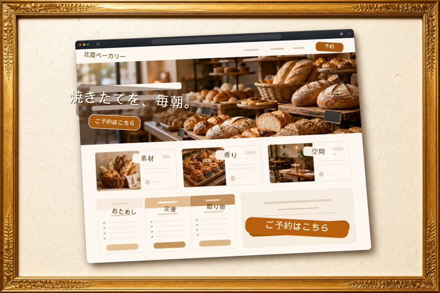
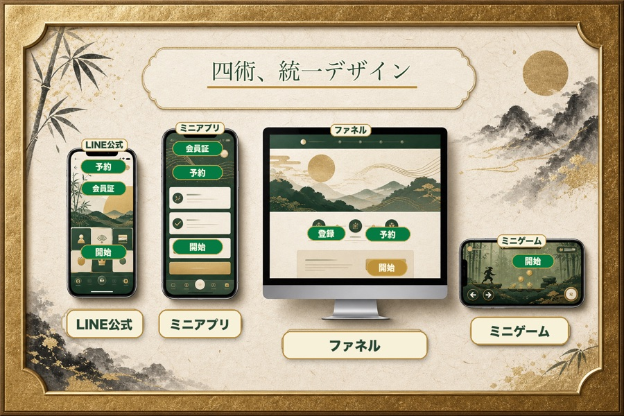
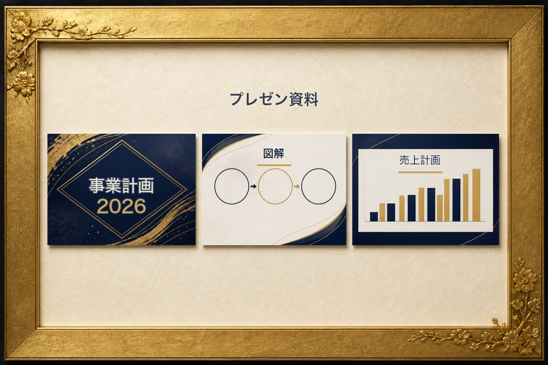
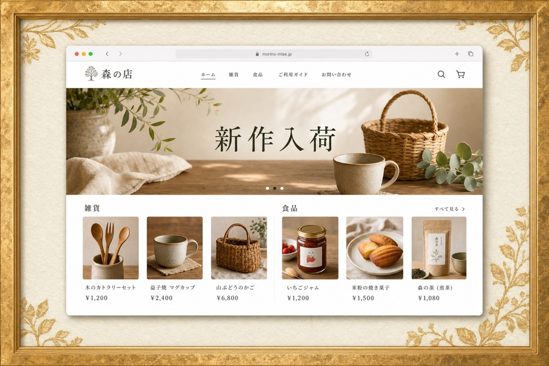
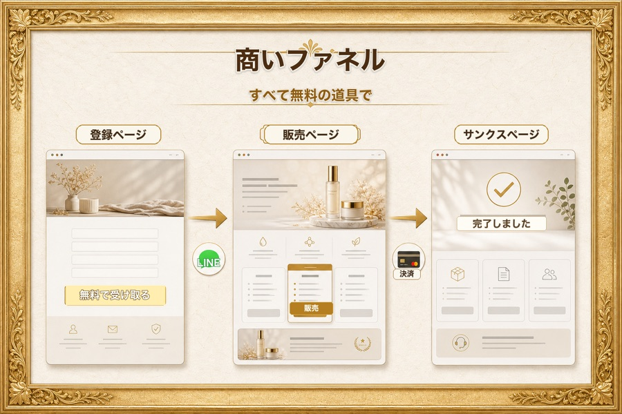
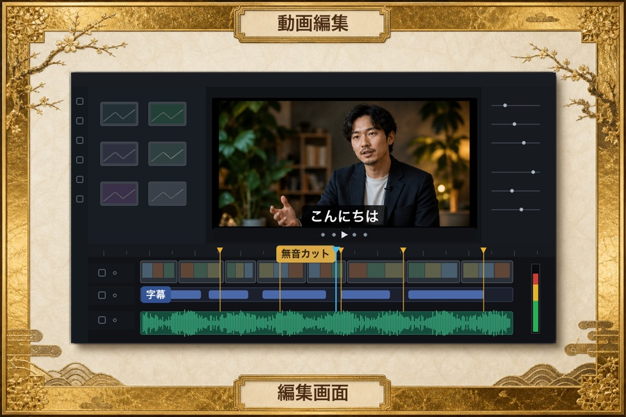
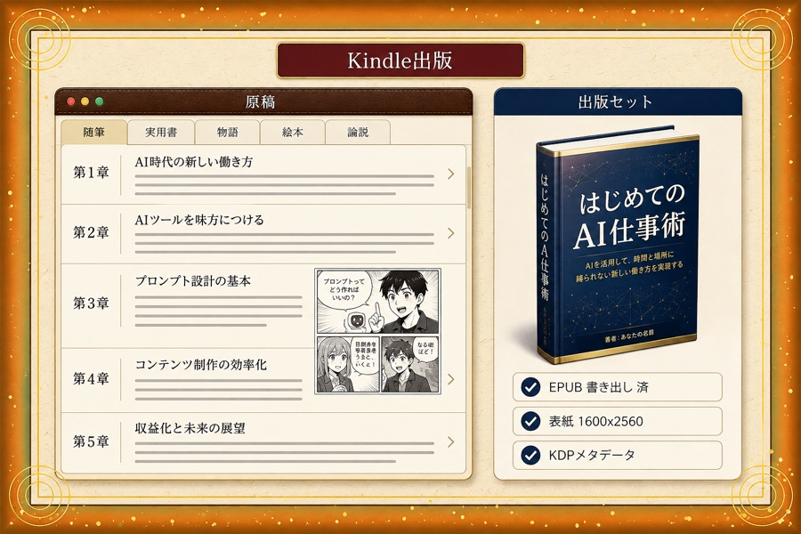
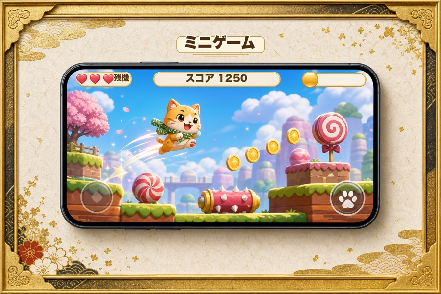
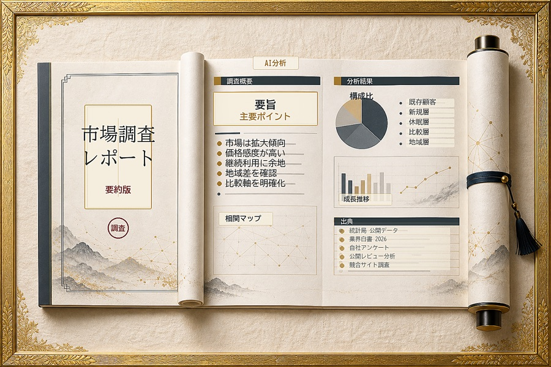
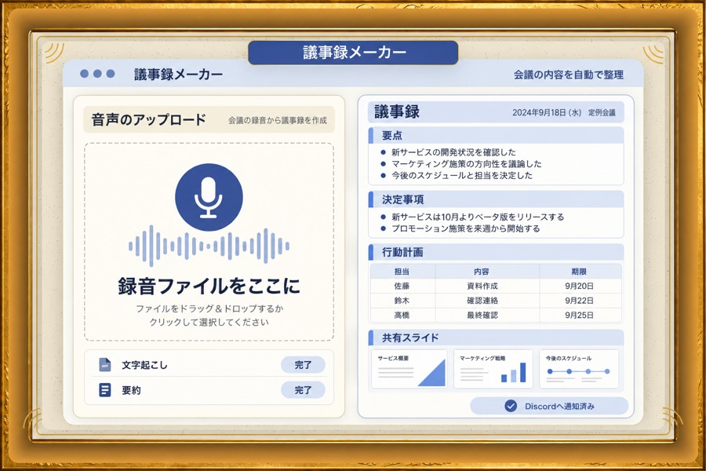
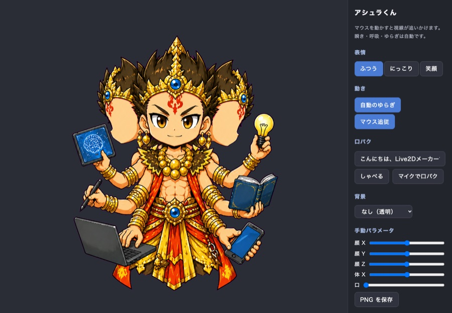
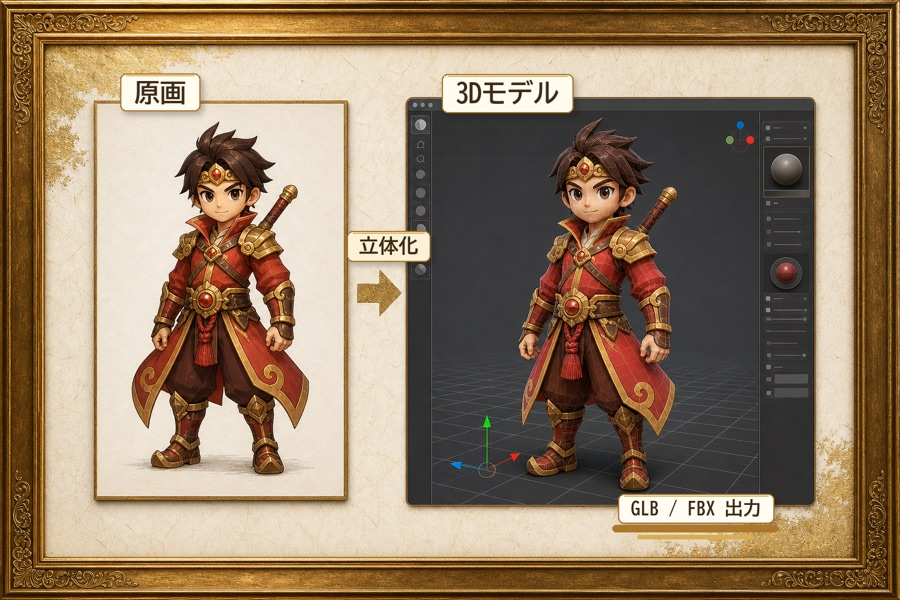
主な利用技術
これらのツールは、会員制サブスク「アシュラ」で一般にも提供しています。
「自分で作りたい」方はアシュラへ、「作ってほしい」方は開発のご相談へ。
GAME STUDIO
「Kitazuna 未来杉の守護者」は、秋田の文化と風景を舞台にしたオリジナルRPGです。キャラクター、BGM、マップ、シナリオ、UIまでAIを活用して少人数で開発し、スマホの縦画面で遊べるブラウザ版と、公式ファンブックを公開します。

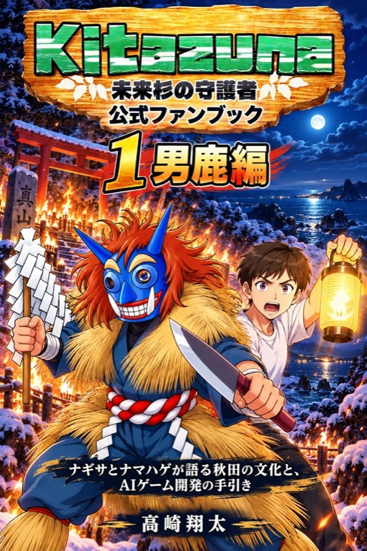
WORKS
地元の事業者から県外の企業まで、納品・運用レベルで動いているものの一部です。
美容・サロン
LINEから予約・変更ができ、店舗側はスマホで一覧管理。高校生メンバーが担当し、運用まで伴走しています。
宿泊・施設運営
紙とLINEで回していたシフト調整を、スマホで完結する業務アプリに置き換えました。
医療・歯科関連
在庫と発注を一画面で管理。担当者の引き継ぎの手間を減らし、発注漏れを防ぎます。
店舗経営
予約確認、ブログ、経理書類、SNS投稿を小さなPC1台で毎日自動化。見張りと遠隔復旧まで。
ヘルスケア
写真から姿勢の変化を分析し、レポートを自動生成。伴走型コンサルの中で全機能を開発しました。
eスポーツ
音声チャットと生成AIでプレイを分析し、アドバイスを返します。Web公開・継続運用中。
福祉
訪問看護の記録や書類をAIが下書き。現場の記述にかかる時間を大きく減らしました。
大学・自治体・企業
大学でのAI講座、企業・自治体のAI活用支援、学校やPTA向けの講演を続けています。
TALENT / DAO型 人材育成
2019年から秋田でプログラミングとAIの塾を運営してきました。いま、塾の授業は会社の実際の仕事に置き換わっています。若手は営業も自己アピールもしなくていい。割り振り、進捗、検収、報酬、実績の記録が、すべて仕組みの側で自動に回ります。
ランクは、検収を通った実績の累計で自動的に上がります。報酬が出るのは「取引先がいて、検収を通った仕事」だけ。実績は改ざんできない成果トークンとして本人の名前で残ります。
MEMBER STORIES
学歴や年齢、出社の有無ではなく、成果で評価する。画面の前で成果を出す力があれば、誰でも仲間です。
高校生メンバー
美容室の予約アプリを担当
はじめ授業でプログラミングを学ぶ塾生だった。
いま地元の美容室の予約アプリを担当し、先方の要望をチェックリストで受けて改修、運用まで面倒を見ている。
不登校を経験したメンバー
初めての納品
はじめ学校の形式には合わなかったが、画面の前で手を動かす力はあった。
いま実案件の工程を担当して納品し、その画面を家族に見せていた。「助かった」と言われて報酬が届く経験が、次の一歩になっている。
大学生メンバー
塾生から、取締役へ
はじめif(塾)で学び、自分でゲームを作っていた。
いま現場責任者として案件の割り振りと進捗を回し、自作ゲームを新人研修の教材に。法人化とともに取締役に就任予定。
PRICING
「小さすぎて誰にも頼めなかった仕事」もお受けします。開発は5万円から。内容を伺ったうえで、固定額でお見積もりします。
| LP制作 | 15万円〜 |
|---|---|
| LINE公式・ミニアプリ | 15万円〜 |
| Web・EC・予約／業務アプリ | 30万円〜 |
| AIカスタム開発 | 50万円〜 |
| ゲーム開発 | 50万円〜 |
| 保守・運用 | 月数千円〜 |
| AI伴走コンサル | 月33万円 |
|---|---|
| AIカテキョ（個別指導） | 月5.5万円 |
| AI導入コンサルティング | 15万円〜 |
| AI人材育成研修 | 1人3万円〜 |
| 講演・研修 | 1回5.5万円〜 |
| AI担当人材の派遣 | 月額・要相談 |
アシュラ会員16,500円／月
表示はすべて税込の目安です。SNS運用（月8万円〜）、広報デザイン（10万円〜）なども承ります。成人向け・法令に反する内容の案件はお受けしていません。
COMPANY
教育から始まり、開発会社へ。根っこの「人を育てる」はそのままに、形を会社に変えます。
代表取締役
高崎 翔太
心理の専門職として7年間、発達障害や不登校の子どもたちの指導に携わったのち、2019年に秋田市でプログラミングとAIの塾「if(塾)」を創業。秋田県よろず支援拠点のコーディネーターとして、県内の中小企業の相談にも数多く関わってきました。「形式ではなく成果で評価される場所」を秋田につくるため、2027年に法人化します。
 会社案内（PDF）をダウンロード事業内容・つくり方・料金を10ページにまとめました
会社案内（PDF）をダウンロード事業内容・つくり方・料金を10ページにまとめました
| 社名 | if塾株式会社（2027年4月設立予定） |
|---|---|
| 前身 | if(塾) 2019年創業 |
| 所在地 | 秋田県秋田市 |
| 役員 | 代表取締役 高崎 翔太 取締役 山﨑 琢己 |
| 事業内容 | AI構築サポート／受託開発（業務アプリ・LINE・Web・EC・自動化）／AI研修／AI活用サブスク「アシュラ」の運営／ゲーム開発／人材育成・派遣 |
| 関連サイト | service.if-juku.net（アシュラ・個人向けコンサル） kitazuna.if-juku.net（ゲーム） if-juku.net（塾） |
| 連絡先 | info@if-juku.net |
COMPANY PROFILE
事業内容、つくり方、料金を10枚にまとめました。この資料も、自社のスライド生成ツールで作っています。
CONTACT
「何を頼めばいいかわからない」段階で大丈夫です。相談は無料。内容を伺ってから、固定額でお見積もりします。
私たちが案件で使っている開発キットが、月額16,500円（税込）で使い放題。まずは30日間、無料で全部試せます。